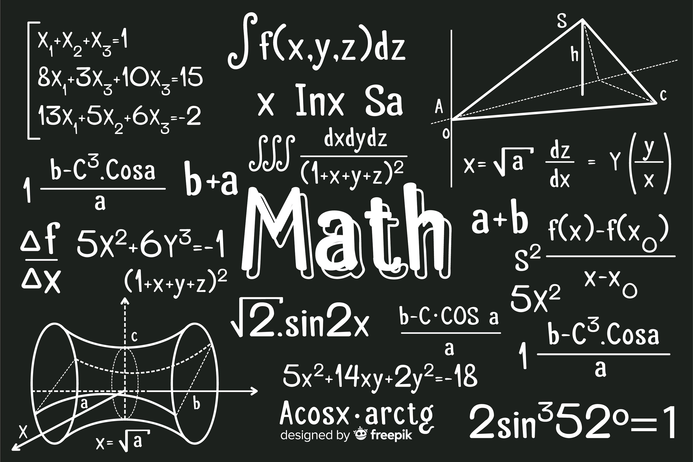

These are some of my favorite classes. They are pretty different, but I enjoy these ones the most!
Latin I have been taking Latin since freshman year. It is one of my favorite classes to go to and I love learning the syntax and morphology of the latin language!
Calculus While it can sometimes be difficult, I enjoy Calculus because I love problem solving and math!